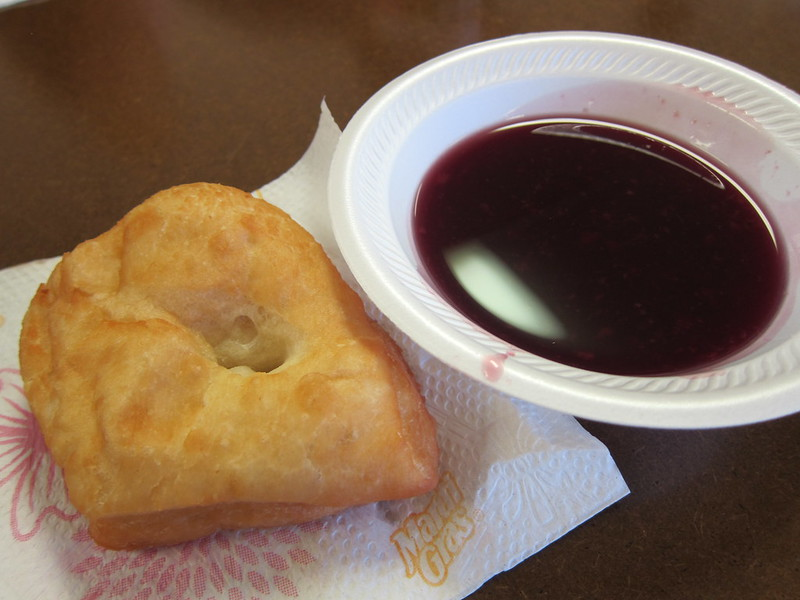

Wojapi Recipe

Here's how you can make delicious wojapi:
Ingredients:
- 4 cups of chokecherries (or other berries like blueberries, blackberries, or raspberries)
- 1 cup of water
- 1/2 cup of sugar (adjust to taste)
- 2 tablespoons of cornstarch
- Optional: a pinch of cinnamon or other spices for flavor
Instructions:
- Prepare the Berries: Wash the chokecherries or other berries thoroughly. Remove any stems or leaves.
- Cook the Berries: In a saucepan, combine the berries and water. Bring the mixture to a boil, then reduce the heat and simmer for about 10-15 minutes until the berries are soft and start to break down.
- Strain the Mixture: Once the berries are cooked, strain them through a fine-mesh sieve or cheesecloth to remove the skins and seeds. You should have about 2 cups of berry puree.
- Sweeten the Wojapi: Return the strained berry puree to the saucepan. Stir in the sugar and bring the mixture back to a simmer, stirring occasionally until the sugar is dissolved.
- Thicken the Wojapi: In a small bowl, mix the cornstarch with a little water to create a slurry. Slowly pour the cornstarch slurry into the simmering berry mixture, stirring constantly. Continue to cook the mixture for another 5-10 minutes, or until it thickens to your desired consistency.
- Add Flavor (Optional): If desired, stir in a pinch of cinnamon or other spices to enhance the flavor of the wojapi.
- Serve or Store: Remove the wojapi from the heat and let it cool slightly. Serve the wojapi warm or chilled as a pudding, sauce, or topping for desserts like ice cream or pancakes. Store any leftover wojapi in the refrigerator for up to a week.